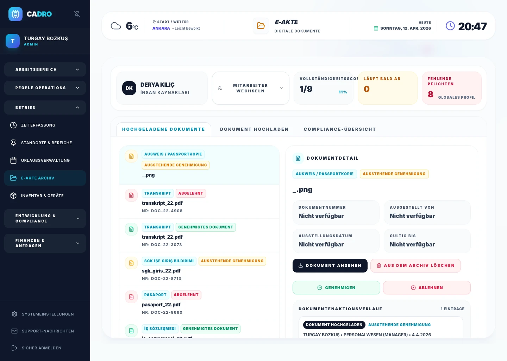

Modul 1
Recruiting und Bewerbermanagement (ATS)
Steuern Sie den gesamten Prozess von der Stellenausschreibung bis zum Angebot. ATS sammelt Bewerbungen, automatisiert Interviewpläne und verkürzt die Time-to-Hire.
ATS-Modul ansehen →

Umfassender Leitfaden
HR-Software (HRMS) ist ein Cloud-System, das Recruiting, Personalakten, Urlaub, Zeiterfassung, Performance und Workforce-Daten in einer Plattform vereint. Mit CADRO verkürzt sich die Time-to-Hire, HR-Prozesse werden effizienter und die Sichtbarkeit von Mitarbeiterdaten wird zentralisiert.
Modul 1
Steuern Sie den gesamten Prozess von der Stellenausschreibung bis zum Angebot. ATS sammelt Bewerbungen, automatisiert Interviewpläne und verkürzt die Time-to-Hire.
ATS-Modul ansehen →
Modul 2
Bewerten Sie Leistung kontinuierlich statt nur jährlich. Verbinden Sie Unternehmensziele mit individuellen Zielen und stärken Sie Ihre Kultur mit 360°-Feedback.
Performance-Modul ansehen →
Modul 3
Kein Suchen in Papierordnern mehr. Speichern Sie Dokumente in einer KVKK-konformen Cloud. Mitarbeitende beantragen Urlaub mobil, Führungskräfte genehmigen mit einem Klick, und alles wird automatisch protokolliert.
Akte-Modul ansehen →